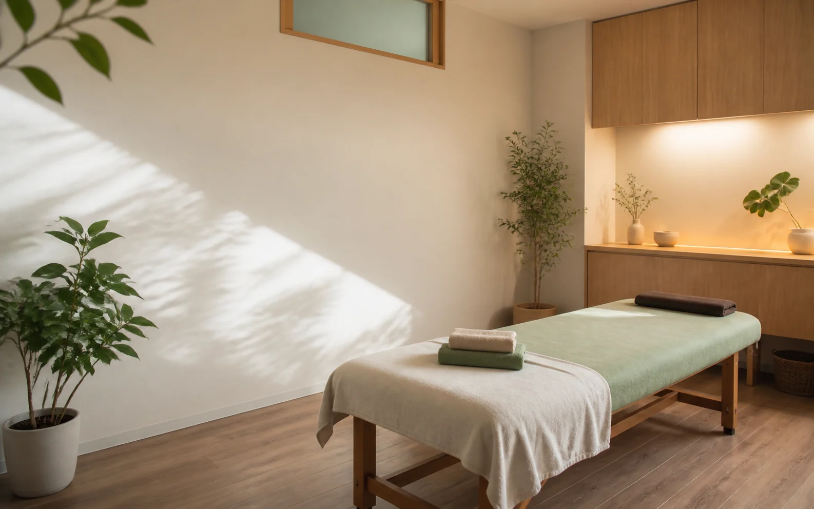

悩み別に探せる
肩、首、腰、姿勢、産後など、来院理由からメニューに進めます。

名古屋市西区 / private body care
月灯り整体院は、肩や首、腰まわり、姿勢の違和感を相談しやすい整体院です。 初回の流れと料金を先に見せて、はじめての予約の不安を減らします。
First visit
整体院のサイトでは、写真の雰囲気、料金、時間、当日の流れが見えないだけで予約をためらわれます。 このサンプルでは、初めての方が知りたい情報を最初から見える位置に置いています。
症状を断定せず、来院前の不安に寄り添う見せ方にします。 広告っぽい強い言い切りではなく、自然に予約へ進める構成です。
肩、首、腰、姿勢、産後など、来院理由からメニューに進めます。
予約前に費用の目安が分かるので、問い合わせのハードルが下がります。
見て納得したタイミングで、すぐ予約できるようにします。
写真、料金、流れ。初めての人が見る順番で整える。
来院してから何をするのかが分かると、はじめての方も予約しやすくなります。
電話で希望日時と相談したい内容を伝えます。
生活習慣や気になる箇所を確認します。
姿勢や動き方を見ながら、当日の進め方を相談します。
次回の目安が必要な場合は、無理なく相談できます。
デモ用のサンプルです。実店舗向けには掲載許可のある声だけに差し替えます。
料金と時間が先に分かって、初めてでも電話しやすかったです。
落ち着いた雰囲気が伝わって、相談しやすそうだと感じました。
流れが書いてあるので、当日を想像しやすかったです。
名古屋市西区で通いやすい整体院をお探しの方へ。
Googleマップ設置枠
実店舗向けには所在地に合わせて差し替えます。